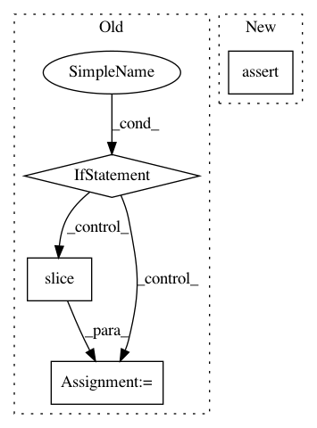

eaefce1cf2d7dbaf3b59fe9f16007c95368609ed,nsgt/nsgtf.py,,nsgtf_sl,#Any#Any#Any#Any#Any#Any#Any#Any#,13
Before Change
ifft = ifftp(measure=measurefft)
if real:
if reducedform:
sl = slice(1,len(g)//2)
// sl = slice(2,len(g)//2-1) // more lossy....
else:
sl = slice(0,len(g)//2+1)
else:
sl = slice(0,None)
maxLg = max(int(ceil(float(len(gii))/mii))*mii for mii,gii in izip(M[sl],g[sl]))
After Change
ifft = ifftp(measure=measurefft)
if real:
assert 0 <= reducedform <= 2
sl = slice(reducedform,len(g)//2+1-reducedform)
else:
sl = slice(0,None)
In pattern: SUPERPATTERN
Frequency: 3
Non-data size: 4
Instances
Project Name: grrrr/nsgt
Commit Name: eaefce1cf2d7dbaf3b59fe9f16007c95368609ed
Time: 2012-08-09
Author: gr@grrrr.org
File Name: nsgt/nsgtf.py
Class Name:
Method Name: nsgtf_sl
Project Name: apache/incubator-mxnet
Commit Name: dd44c0c3bc168b3e88cda22c443283894fd24c54
Time: 2020-09-21
Author: lausen@amazon.com
File Name: python/mxnet/symbol/numpy/_symbol.py
Class Name: _Symbol
Method Name: __getitem__
Project Name: ilastik/ilastik
Commit Name: 50ce2bcf18b82c182667ba8291d2a6c556ce16e3
Time: 2013-03-05
Author: bergs@janelia.hhmi.org
File Name: ilastik/applets/thresholdTwoLevels/opThresholdTwoLevels.py
Class Name: OpThresholdTwoLevels
Method Name: setupOutputs